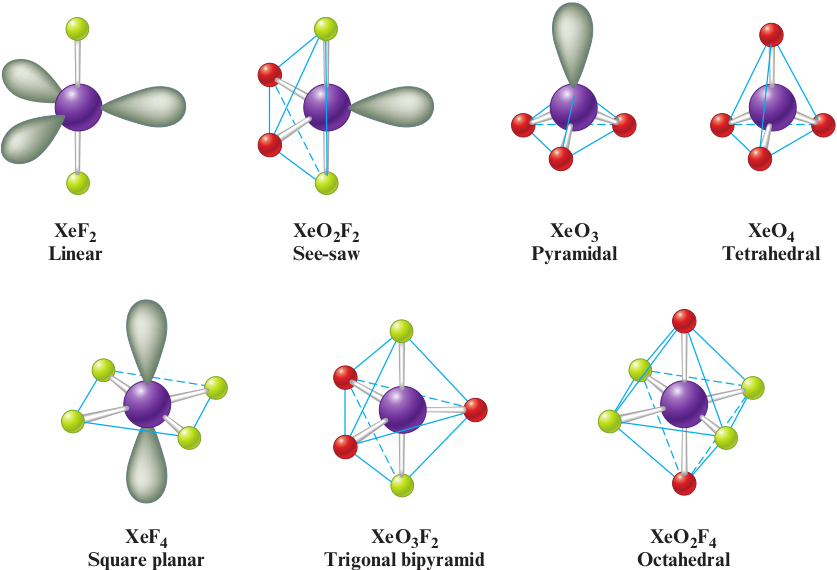

The Group 8A (18) elements
The Group 8A (18) elements, the noble gases, are characterized by filled s and p valence orbitals (electron configurations of 2s2 for helium and ns2np6 for the others).
Because of their completed valence shells, these elements are very unreactive. In fact, no noble gas compounds were known prior to 1962. Selected properties of the Group 8A (18) elements are summarized in Table 19‐22.
Helium was identified by its characteristic emission spectrum as a component of the sun before it was found on the earth. The major sources of helium on the earth are natural gas deposits, where helium was formed from the α-particle decay of radioactive elements. The a particle is a helium nucleus that can easily pick up electrons from the environment to form a helium atom. Although helium forms no compounds, it is an important substance that is used as a coolant, as a pressurizing gas for rocket fuels, as a diluent in the gases used for deep-sea diving and spaceship atmospheres, and as the gas in lighter-than-air airships (blimps).
Like helium, neon forms no compounds, but it is a very useful element. For example, neon is widely used in luminescent lighting (neon signs). Argon, which recently has been shown to form chemical bonds under special circumstances, is used to provide the noncorrosive atmosphere in incandescent light bulbs, which prolongs the life of the tungsten filament.
Krypton and xenon have been observed to form many stable chemical compounds. The first of these was prepared in 1962 by Neil Bartlett (1932-2008), an English chemist who made an ionic compound that he thought had the formula XePtF6−. Subsequent studies indicated that the compound might be better represented as XeFPtF6− and contains the XeF+ and PtF6− ions.
Less than a year after Bartlett’s report, a group at Argonne National Laboratory
near Chicago prepared xenon tetrafluoride by reacting xenon and fluorine gases in a nickel reaction vessel at 4008C and 6 atm:
Xe (g) + 2F2 (g) ⟶ XeF4(s)
Xenon tetrafluoride forms stable colorless crystals. Two other xenon fluorides, XeF2 and XeF6, were synthesized by the group at Argonne, and a highly explosive xenon oxide (XeO3) was also found. The xenon fluorides react with water to form hydrogen fluoride and oxycompounds. For example:
XeF6 (s) + 3H2O (l) ⟶ XeO3 (aq) + 6HF(aq)
XeF6 (s) + H2O (l) ⟶ XeOF4 (aq) + 2HF(aq)
| Element | Melting Point (°C) | Boiling Point (°C) | Atmospheric Abundance (% by volume) | Examples of Compounds |
|---|---|---|---|---|
| Helium | −270 | −269 | 5 x 10−4 | None |
| Neon | −249 | −246 | 1 x 10−3 | None |
| Argon | −189 | −186 | 9 x 10−1 | HArF |
| Krypton | −157 | −153 | 1 x 10−4 | KrF2 |
| Xenon | −112 | −107 | 9 x 10−6 | XeF4, XeO3, XeF6 |
In the past 35 years, other xenon compounds have been prepared. Examples are XeO4 (explosive), XeOF4, XeOF2, and XeO3F2. These compounds contain discrete molecules with covalent bonds between the xenon atom and the other atoms. A few compounds of krypton, such as KrF2 and KrF4, have also been observed. The structures of several known xenon compounds are shown in Fig. 19‐27. Radon also has been shown to form compounds similar to those of xenon and krypton.
